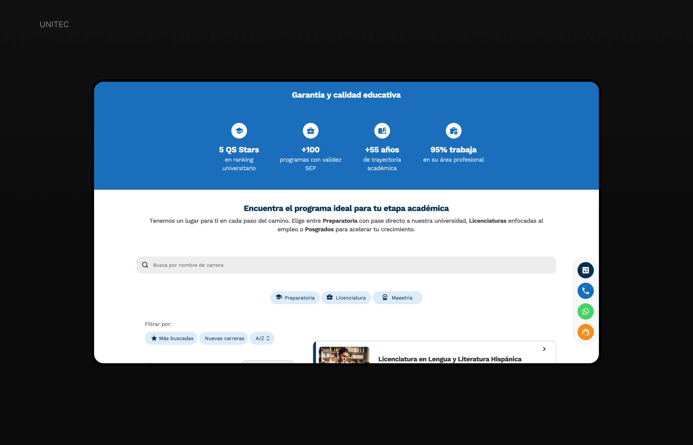
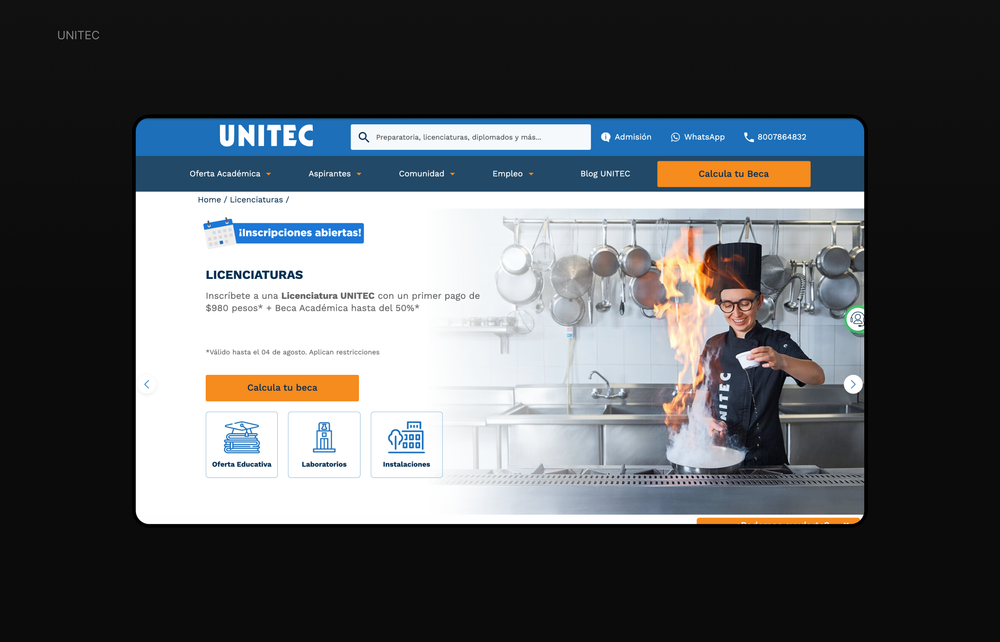
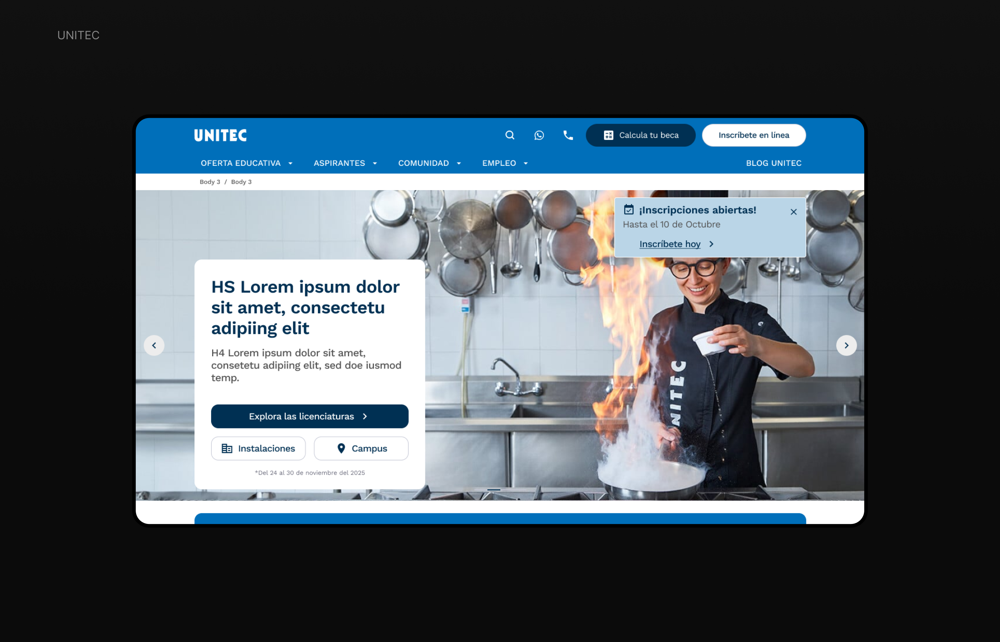
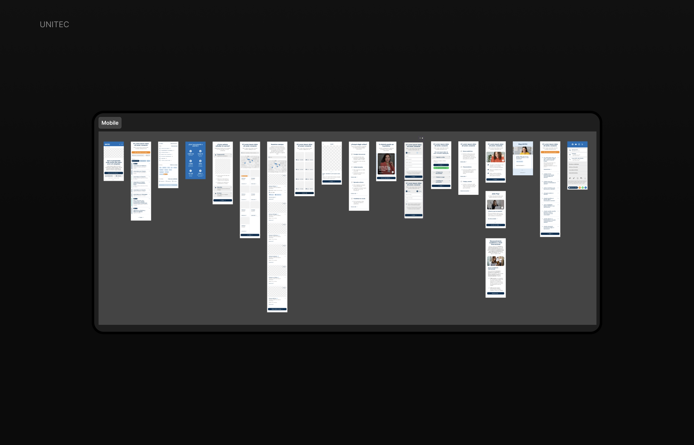
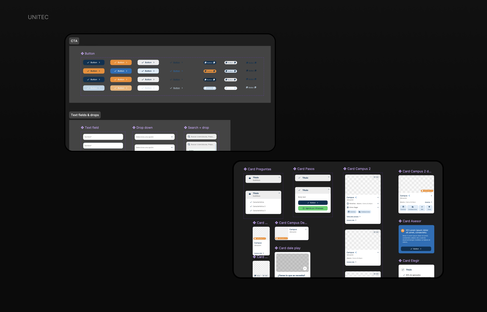
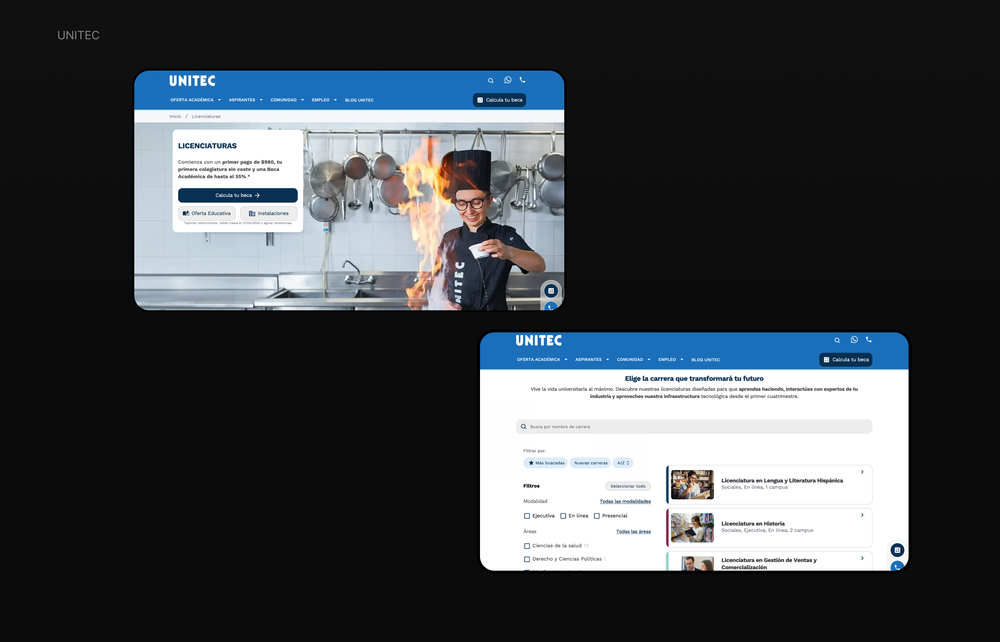
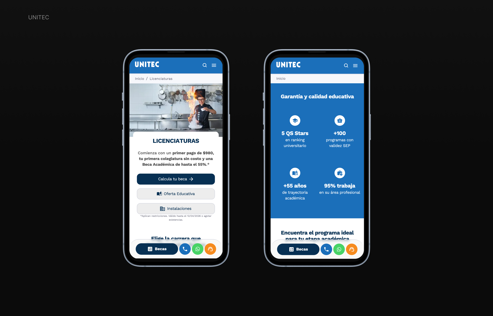

UNITEC
From incomplete wireframes to a fully designed platform across 30+ pages

This project was developed in collaboration between two agencies, where one team owned the UX and wireframes, while our team was responsible for development.
Due to a misalignment, development started directly from wireframes without a defined visual system, leading to a product that lacked hierarchy, consistency, and brand identity.
With the deadline approaching, we entered a critical phase where the product needed to be fully designed in a very limited timeframe.


I inherited responsibility for the design phase once the initial visual direction was defined. My responsibilities included:
Given the time constraints, I focused on building the system while designing, rather than separating both phases. This allowed me to:

I defined a component-based system following Atomic Design principles, including:
This system ensured consistency and scalability across the entire platform.

The final product delivered a consistent and scalable experience across all pages, improving content hierarchy, usability, and alignment with the brand.

Special attention was given to mobile usability, prioritizing readability, navigation simplicity, and clear CTAs.
